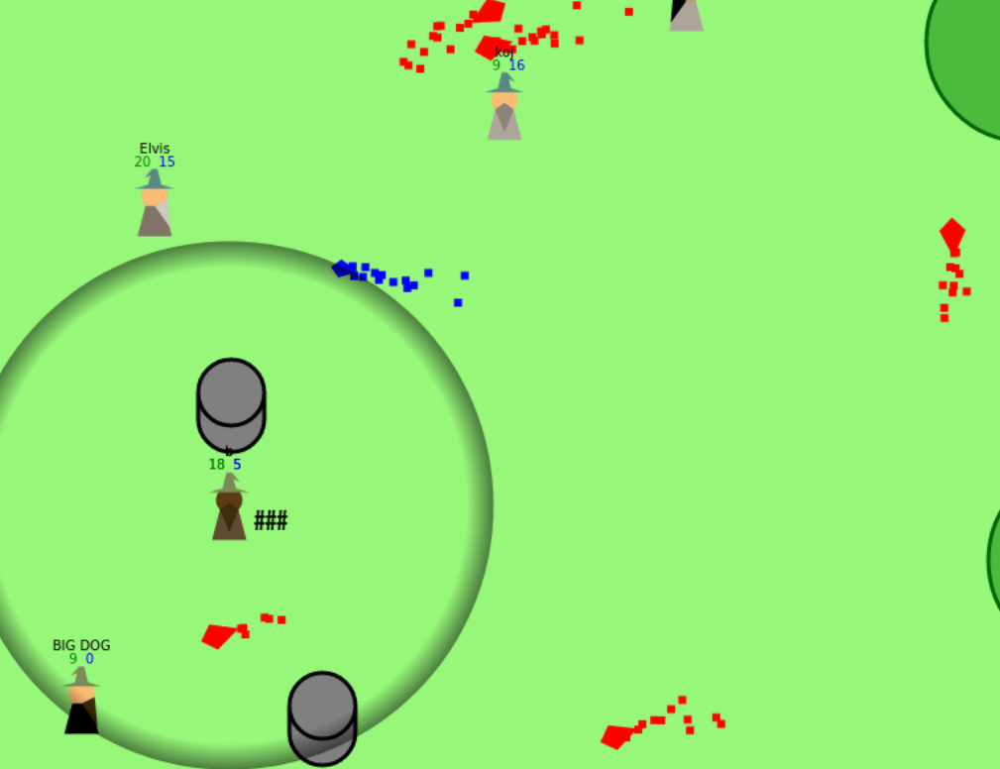

I've been working on a productivity tool to help me stay more focused at work. It would probably be useful to anyone that does office work or school. It lets you choose ahead of time what you're going to do and how much time you'll spend on it, then it sets a timer, then it has you report on what you actually did during that time. It keeps a color-coded timeline of your spent time to help reinforce better behavior.
Check it outSorry in advance for the lack of instructions. It's not a polished tool (yet).
What if you could play SSB as a card game? What if you could make your own characters and move lists?
More infoA standardized method for hosting text adventures online.
More info
Wizard battle game. Read the How To Play page. Good luck figuring out how the spells work.
Play it online here